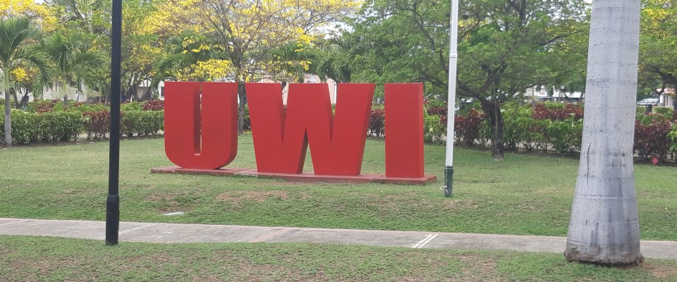
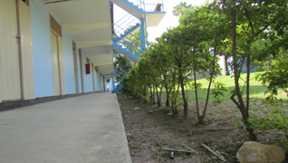

Block D, Mona
UWI’s Taylor Hall history records Block D as constructed and occupied by 1954. This is the building’s history; the fraternity’s founding date still needs confirmation.
 ATTICATHE ALUMNI CONNECTION
ATTICATHE ALUMNI CONNECTIONBLOCK D. TAYLOR HALL. UWI MONA.
You moved forward.
The connection came with you.
ROOTED IN TAYLOR HALL
Attica is Block D at Taylor Hall, UWI Mona. This proposed alumni home brings the connection beyond the block: a place for old friends, shared memories and the next generation.
Explore Taylor Hall at UWI ↗UWI’s Taylor Hall history records Block D as constructed and occupied by 1954. This is the building’s history; the fraternity’s founding date still needs confirmation.
An archived UWI Block Week notice describes culture, cricket, a public forum and an invitation to past Atticans.
Read the UWI archive ↗The Jamaica Observer reported a 2–1 final win over Roosters in the UWI Guild Champions League.
Read the match report ↗THE PLACES. THE STORIES.


A future members’ archive could preserve block life, reunions and the people behind the memories.
Alumni photographs and captions will be added with the owners’ permission. No submissions are collected in this demo.
A NEXT CHAPTER, TOGETHER
Ideas for the alumni group to shape.
These programmes are proposed, not yet launched.
A consent-based alumni network, organised by generation and interests, with members choosing what they share.
An archive of block memories, alumni journeys and the moments that deserve to be remembered.
Mentorship, practical advice and support for current students, shaped and approved by the fraternity.
The finished site can carry confirmed dates, venues and organiser details. No event dates or fundraising appeals have been invented for these concepts.
ONCE CONNECTED. STILL CONNECTED.
Start with the fraternity’s existing social channel.
Connect with Attica on Instagram ↗Official Hall links also connect to Attica’s account.
View Taylor Hall’s link directory ↗
Design 02 — Black & Teal. A confident, high-contrast identity with oversized type and a strong social connection.
Structure inspiration: Harvard Alumni. This is an original Attica concept, not a copy or an affiliation. Crest: Attica’s linked public Instagram profile. Photographs: The UWI. High-resolution assets and publication permissions should be confirmed before the official site launches.
I like this direction →